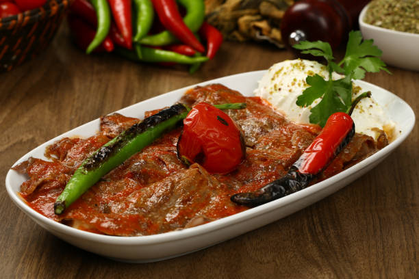

Iskender Kebab

Description
İskender kebap is a Turkish dish that consists of sliced meat topped with
hot tomato sauce over pieces of pita bread, and generously slathered with
melted special sheep's milk butter and yogurt.
It can be prepared from thinly cut grilled lamb or chicken.
The prepared kebab is placed at a distance of 10-15 cm (3.9-5.9 in) from
the previously lit fire and is cooked slowly, then it is cut thinly with
a knife from top to bottom and is then served.
Tomato sauce and melted butter are generally poured over the dish at the table,
for the customer's amusement.
Ingredients
- 4 pita bread rounds
- 1 tablespoon olive oil
- 4 skinless, boneless chicken breast halves - chopped
- 2 medium onions, chopped
- 1 clove garlic, minced
- 1 (10.75 ounce) can tomato paste
- ground cumin to taste
- salt to taste
- ground black pepper to taste
- ½ cup butter, melted
- 1 cup Greek yogurt
- ¼ cup chopped fresh parsley
Steps
-
Preheat the oven to 350 degrees F (175 degrees C).
Arrange pita bread on a baking sheet.
-
Bake pitas in the preheated oven until lightly toasted;
cut into bite-sized pieces and keep warm.
-
Heat oil in a skillet over medium heat. Stir in chicken, onion, and garlic;
cook until chicken is cooked through and juices run clear, about 10 minutes.
Mix in tomato purée; season with cumin, salt, and pepper.
Continue to cook and stir for a few minutes.
-
Arrange toasted pita pieces in a serving dish. Drizzle with melted butter
and top with chicken mixture. Garnish with yogurt and parsley to serve.